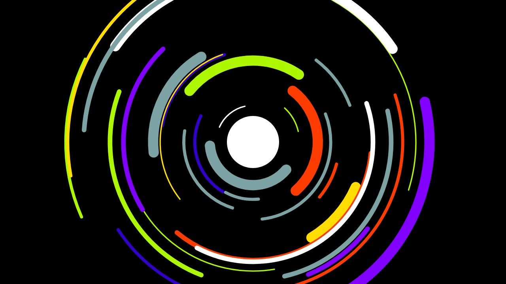
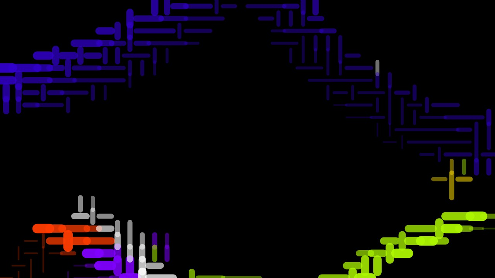
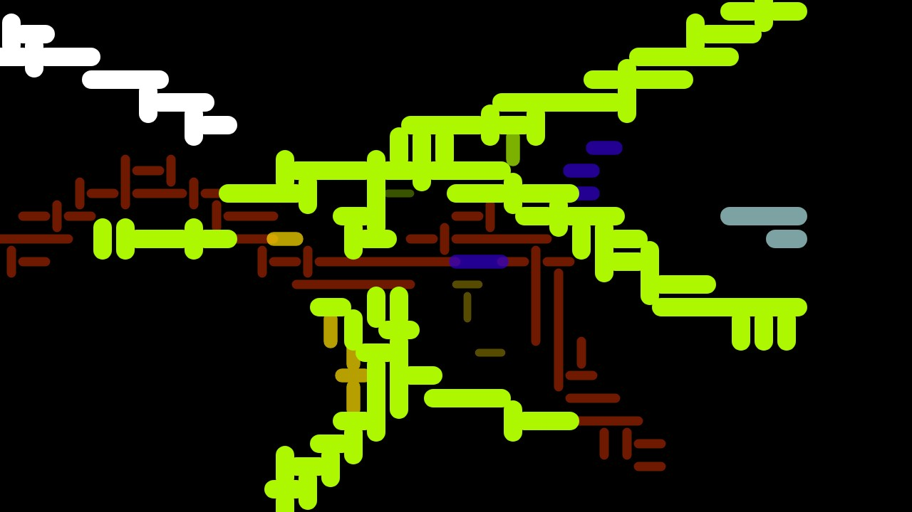

Linear
Compositions
A live audiovisual performance by Matěj Moravec, in which lines are drawn in real time and react to music. Here his two practices, the visual and the musical, finally collide: he creates the visuals and plays the music himself, as Nathan Solo.

The work
On a black screen, coloured lines grow, circle, travel as waves and sweep across grids. Nothing is pre-recorded: the lines are generated live in TouchDesigner and follow the music as it is played. The bass swells the thickest lines, the mid-range the medium ones and the highs the finest. Chance decides where a line goes; the music decides how it breathes.
The show unfolds in chapters that flow into one another, and it changes from one performance to the next.
Matěj Moravec is a graphic designer. Since 2013 he has played live electronic music as Nathan Solo. Linear Compositions is the first work that joins the two.
The work draws on the Czech painter Zdeněk Sýkora and his use of chance, and on the Swiss style designers Josef Müller-Brockmann and Emil Ruder. It is an original work and does not reproduce any of their works.
Video
Stills



© Matěj Moravec, 2026. Original generative compositions; no works by Zdeněk Sýkora are reproduced. High-resolution images and video on request.
Technical
- Format
- Live audiovisual performance, 14 chapters of about 5 minutes with continuous transitions, 1 h 30 min per loop, repeats on its own
- Graphics
- Real-time generative graphics in TouchDesigner, line paths computed by GLSL shaders
- Output
- One 16:9 video output, native 1280 × 720, scalable
- Display
- Projector (image at least 3 m wide) or one or more 16:9 screens, 55 inch minimum (65 ideal), HDMI
Press & contact
Matěj Moravec, visuals · matejmoravec.com
Nathan Solo, live sound · nathansolo.com · e-mail for booking